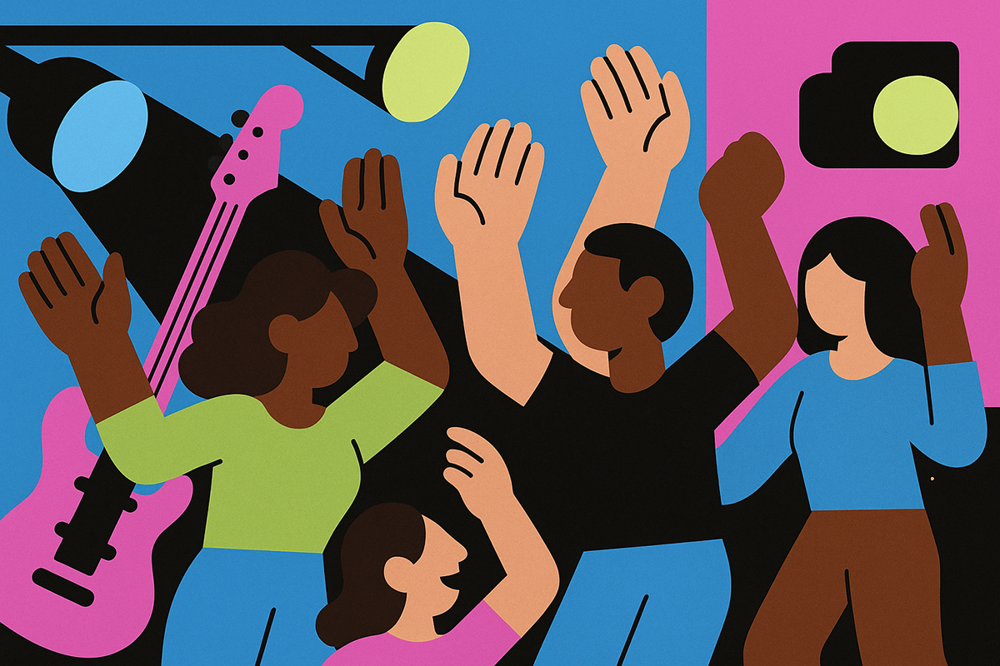
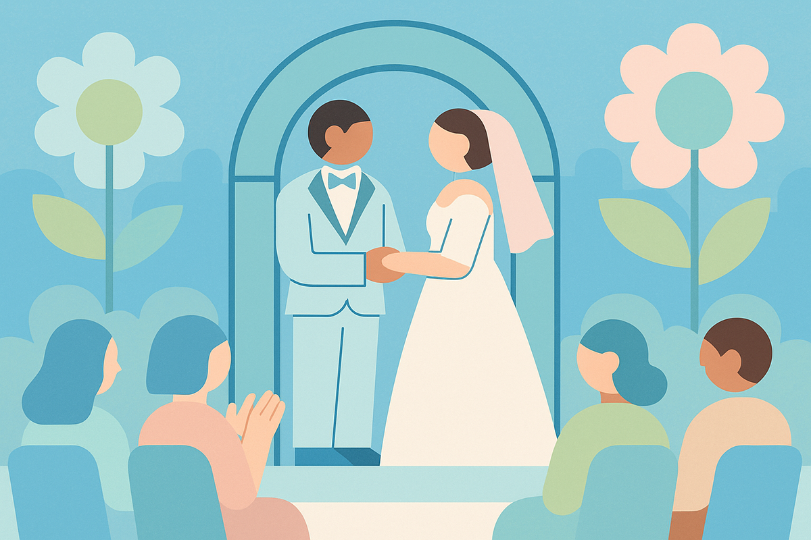
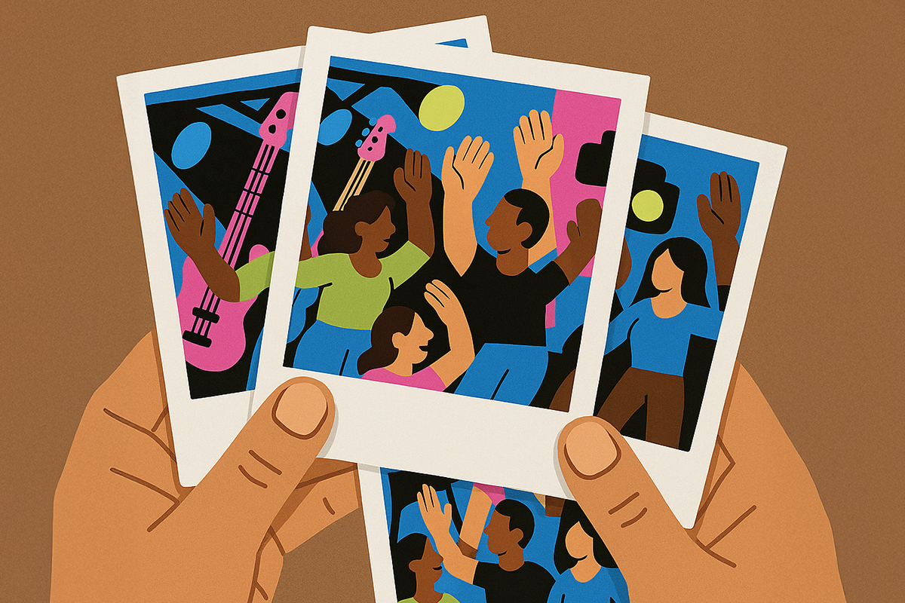

La nueva era del entretenimiento sin selfies
¿Experiencia inmersiva o método de control?
¿Experiencia inmersiva o método de control?

Todos lo hemos vivido. Últimamente, ir a un concierto ya no se trata solo de esquivar cabezas de personas más altas que nosotros. Ahora, tenemos que lidiar también con las cámaras y celulares que buscan registrar la experiencia para subirla a redes sociales o YouTube.
Resulta que no son solo algunos asistentes los que se cansaron de esto, ahora también los artistas están tomando una posición frente a esta realidad. Por eso, cada vez son más los conciertos y eventos que ofrecen experiencias libres de selfies, es decir, de teléfonos.

El primer artista conocido que hizo esto fue Jack White en 2018. El vocalista de los White Stripes anunció conciertos “phone-free” ese año, explicándole a su público que quería que miraran hacia arriba un rato, experimentaran la música y el amor que sienten por ella, en persona.
¿Cómo funcionaba? No te obligaban a deshacerte de tu teléfono, pero sí a guardarlo dentro de una bolsa sellada llamada Yondr. Estas bolsas, que crea una startup de Silicon Valley con el mismo nombre, tienen un sello que solo puede ser decodificado por el staff al final del concierto o ante una emergencia.
Le siguió el grupo Tool, en 2019, prohibiendo también los teléfonos en toda una gira musical.
La razón de la gran mayoría de los artistas al hacer esto es la presencialidad. Buscan que sus fans estén disfrutando el concierto, que no estén preocupados de grabar y que vivan la experiencia sonora y visual.
Ahora, algunos críticos destacan otras posibles razones para promover esto. Lo primero es quizás lo más obvio: exclusividad. Hay artistas que acompañan sus conciertos de shows visuales y de luces. Si no puedes verlo por YouTube, obviamente más ganas vas a tener de ir a uno de estos conciertos exclusivos.
Segundo, el factor sorpresa. Si todos sabemos que en cierta canción salen unos bailarines del techo porque lo vimos en TikTok, ya nadie se va a sorprender en el siguiente concierto si es que eso ocurre.

Esta nueva tendencia escapa de los conciertos y ha llegado a otro tipo de eventos. Por ejemplo, el matrimonio de Paulo Dybala y Oriana Sabatini prohibía el uso de celulares para que nada se filtrara a los medios antes de tiempo.
Los clubes nocturnos en ciertos países también lo hacen. En Berlín, el precursor fue el club Berghain, pero se le han sumado otros como re:club en Madrid o Látex Club en Valencia.
Si bien todos pensaríamos que son los artistas jóvenes los que están más al día de las tendencias, también hay grandes exponentes de la música que se han sumado. Bob Dylan, que está muy en boga por su película biográfica “Un Completo Desconocido”, prohibió todo uso de teléfonos en su última gira.

Rawayana, el grupo venezolano, hizo algunos conciertos de este tipo y fueron aún más lejos: unos días después del concierto, enviaron a los asistentes un set de fotos y videos profesionales para que pudieran postear en sus redes sociales.
Al final, ese es uno de los argumentos más fuertes de las personas que se oponen a esto: si vivimos para crear recuerdos, ¿vale la pena cumplir un sueño sin tener fotos o videos para poder recordarlo para siempre?
¿Tú qué piensas? ¿Te animas a ver a tu artista favorito a manos libres?
 Cultura
CulturaSé que suena raro hablar de calor extremo mientras en Chile todos están buscando la parka más gruesa del clóset.
 Cultura
CulturaEl hecho de que estemos entrando al mes de julio no se puede creer. Pero lo que tampoco se puede creer es la cantidad de artistas que han…
 Cultura
CulturaCuando hablamos de trabajos clásicos de la música chilena, siempre se nombran los discos de Violeta Parra, Víctor Jara, Los Jaivas o…